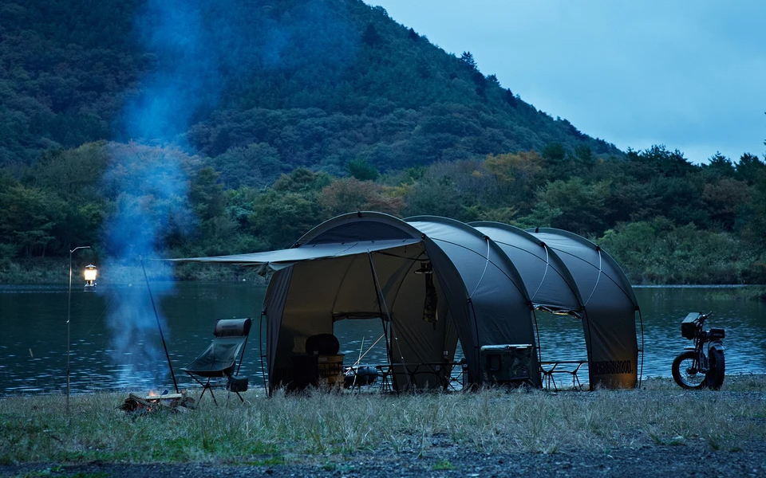

글로벌 아웃도어 브랜드 헬리녹스는 2009년, 등산용 스틱을 시작으로 헬리녹스 제품을 사용하는 유저들이 언제 어디서나 편안한 휴식을 즐길 수 있는 캠핑 용 퍼니쳐와 악세서리들을 개발, 생산하고 있습니다. 헬리녹스의 모든 제품들은 가볍고 컴팩트한 사이즈로 제작되어 캠핑 및 여행 등 어떤 아웃도어 활동에도 편리하게 사용할 수 있고, 휴대하기 쉬우며, 튼튼하고, 아름답습니다. 숲 속 깊은 곳에서 캠핑이나 백패킹을 할 때, 옥상에서 친구들과 소규모 파티를 할 때, 여름 날 해변에서, 자동차 캠핑에서, 심지어 집에서도 헬리녹스의 제품과 함께 하고 싶어 질 것입니다.
